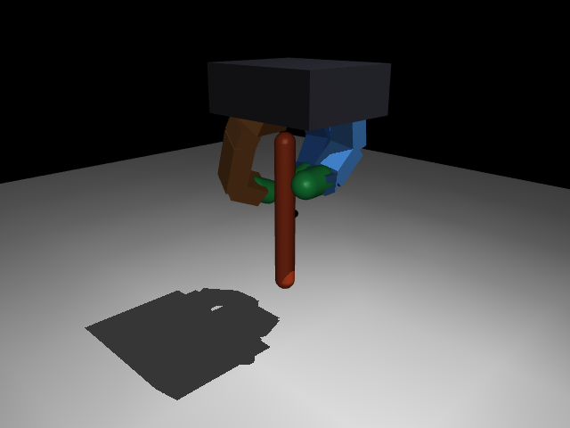

Ten mass scales s=400→1. Fixed/unseen net-angle success 1.0/1.0. No numerical blow-up, no revolute drop.
Phase T · tip-connect
Blocked
Heavy s=400 and s=100 all terminate on axis_tilt. Lower masses were not started.
Phase F · free rod
Planned
No revolute hinge, no tip equality. Full 6-DoF rod. Not entered on the Allegro track. Legacy Stage 1/2 already failed this jump.
Rotation can exceed 180°. Tip error stays millimetric. The failing gate is axis tilt < 0.25 rad (≈14.3°). Collapse is monotonic: per-episode max tilt equals final tilt.
02 / TaskWhat is being learned
In-hand axial rotation of a rod
Embodiment
Allegro V3–derived index + middle + thumb, 4 joints each
12-D position actions, 48-D observations
Bottom-tip task: support the lower endpoint while spinning the rod about its long axis
SB3 PPO, [512, 256, 128]
Saved pose my_grasp.json
Net-angle success gate
Unwrapped net angle ≥ π (180°)
Axis tilt < 0.25 rad (≈14.3°)
Tip / anchor error < 0.02 m
Finite, stable, no physical drop
Contact occupancy is diagnostic, not a gate
DexScrew-style sustained-ω success (0.5 rad/s for 10 s) remains 0 at the best saved-pose checkpoint. Curriculum stages use net-angle, not return.
03 / Observation48-D shared layout · env._get_obs
Not 12 joints plus 3 contacts
The 48-D vector is fixed across Phase R and Phase T so PPO weights can transfer. It is not raw MuJoCo qpos/qvel. Allegro nu=12 expands the earlier 9-DoF / 42-D surrogate layout.
Index
Dim
Content
Notes
0–11
12
Hand joint positions q
Index, middle, thumb × 4
12–23
12
Hand joint velocities q̇
Same order as actuators
24–26
3
Per-fingertip normal force
Yes: one scalar per finger, clipped to 20 N then /20
12q + 12q̇ + 3force + 6centers + 3tip + 3ω-feats + 2sincos + 3axis + 1tilt + 3linvel = 48.
Privileged concat is optional and is not in the current 48-D teacher.
04 / Hand designGeometry was a hard upper bound
The 9-DoF surrogate could not make three contacts
What we tested
Keyboard teleop scripts/teleop_hand.py as a human upper bound: if a person cannot wrap three pads, PPO cannot either
Fingers 0 and 1 reached the rod (min distance ≈ −24 mm, 32–54 N)
Finger 2 stayed 66.7–68.3 mm away at every sample
What that meant
4,166 two-contact states, zero three-contact states
Cause: planar finger 2 lived at world Y = +0.04 m; rod at Y ≈ −0.05 m (FIND-20260724-001)
A later spatial-axis patch made contact geometrically possible, but the legacy reset still never visited three contacts
Contact reward was then measuring an unreachable state, not RL exploration
Decision: replace the planar 9-DoF debug hand with a primitive, Allegro-like 12-DoF index/middle/thumb model. Keep mesh-free collision; copy official joint frames, axes, ranges, and thumb opposition.
Rejected
9-DoF planar surrogate. Reset forces 56.6 / 57.7 / 0 N. Third finger cannot close the wrap.

Adopted
12-DoF Allegro-like primitives. Reset forces 1.35 / 5.56 / 1.78 N. 50/50 three-contact audits in both physics variants.
Same rod, same 45° camera. The new model preserves Menagerie Allegro V3 joint frames (commit da76818) with box/capsule collision. Action/obs stay 12 / 48.
06 / Physics phasesRod constraint is the curriculum, not the reward
Phase R, T, and F
Phase R · current, passed
1 DoF
Revolute hinge
MJCF rod_hinge. Tip / COM location is fixed. Only axial spin is free. Tilt is kinematically impossible. Matches DexScrew’s 1-DoF nut joint.
Phase T · blocked
3 DoF
Tip-connect
Free joint (6) minus a 3-constraint <connect> at the bottom tip. Remaining: spin + two tilt axes. A spherical joint at the endpoint, not a hinge. Axial constraint torque ≈ 0.
Phase F · planned
6 DoF
Free rod
Same rod_free, equality off. No revolute, no tip-connect. 3 translations + 3 rotations. The hand must hold both the endpoint and the axis. Not started on Allegro.
Joint in XML
Equality
Unconstrained rod DoF
What the policy must do
R
hinge, axis = rod long axis
none
1 (spin)
Finger gait only
T
free (7 qpos / 6 qvel)
point connect on
3 (SO(3) about tip)
Gait + keep the rod upright
F
free
off
6 (SE(3))
Gait + upright + hold the tip in space
07 / Why a curriculumDifficulty is in the constraint, not the mass schedule
Learn spin before learning balance
Hypothesis (pre-registered)
DexScrew’s ω reward is defined on a 1-DoF hinge. Matching that first isolates gait.
A <connect> is a ball joint: tilt becomes a new failure mode the revolute policy never saw.
Turning the connect off (Phase F) adds translation. Jumping there from a constrained policy should collapse.
Therefore train R → T → F, and only drop a constraint after the previous gate passes.
What would support it
Phase R from scratch succeeds; Phase T from scratch does not
Legacy Stage 0 (connect on) succeeds; Stage 1 (connect off, Phase F–like) fails after transfer
R → T transfer is better than T from scratch, but may still miss the tilt gate
The next slide is that ablation. Ordering is supported. R → T transfer is not yet sufficient.
08 / Curriculum ablationSame reward family; only the rod constraint changes
The ordering matches; the transfer cliff is real
Experiment
Phase
How it was trained
Success
Rotation
Matches hypothesis?
EXP-A0 · 2e5 steps
R
From scratch on hinge
0.85
366°
Yes: 1-DoF gait is learnable
EXP-B0 · 1e6 steps
T
From scratch, connect on, stab 0
0.00
−1.3°
Yes: skipping R does not learn spin
EXP-B1 · 1e6 after A1
T
Transfer from revolute
0.00
tilt ≈ 43.9°
Partial: better than B0, still 20/20 tilt
Legacy Stage 0
T-like
Hanging connect + stabilizer
0.95
528°
Yes: assist + connect is easy
Legacy Stage 1
F
Resume Stage 0; connect off
0.00
−38.6°
Yes: abrupt F jump destroys the skill (FIND-F4)
Proportional C, R09
R
Mass 400 → 1 on hinge
1.00 / 1.00
11,385°
Yes: R remains solvable at s=1
Proportional T00
T
Transfer at s=400, then s=100 probes
0.00 / 0.00
177° then ~80° tilt
Same cliff as B1, on the Allegro hand
Curriculum is justified: T-from-scratch and F-after-T both fail as predicted. It is not yet a solution: R → T still dies on lateral tilt. Reward-scale patches at T did not close that gap.
The hinge hides missing support: tilt cannot happen, so huge unwrapped angle is not a transferable three-finger gait. That is why Phase T is the first real stress test.
10 / Phase TDBG-20260823-006
Removing the hinge, the rod falls sideways
s=400 low-LR retry
177° / 175°
Success 0/0. 20/20 axis_tilt. Representative failure: 179° rotation, 86° tilt. Tip error < 4.04 mm.
s=100 zero-shot
182° / 169°
From accepted revolute s=100 into tip-connect. Final tilt ≈ 80°. Success 0/0.
s=100 Δtilt probes
0 / 0
Recovery and growth, 65,536 steps each. Final tilt still ≈ 80–83°. Same termination as s=400.
Ruled out: point-connect axial resistance, NaNs, tip leaving the 2 cm ball. Immediate mechanism: the revolute policy never closed a tilt loop, so 3 unconstrained rotational DoF are unprotected.
11 / Reward probesOne-sided Δtilt only
A tilt term that fires still misses 14.3°
Condition
Success
Fixed rotation
Final / max tilt
Share of Σ|r|
Read
Zero-shot
0.00
182.3°
79.3° / 79.3°
—
Already monotonic collapse
Recovery ×50 pay only if Δtilt < 0
0.00
191.0°
81.5° / 81.5°
0.2–0.4%
Almost never on-policy
Growth ×50 penalize Δtilt > 0
0.00
280.1°
82.7° / 82.7°
3.3–4.1%
Fires; still saturates ~80°
After growth, rotation is 38–42% of |reward| (about +5.2 to +6.5 / step) versus growth ≈ −0.5 / step. Experiment scale 50 is not the new default.
12 / NextSmallest discriminating test
Change the grasp or add a tilt assist
Do
A tip-connect-specific grasp / preload, separate from the revolute companion
Or an explicit tilt assist, then fade it (same logic as R → T)
First: 10-seed zero-action reset at T, s=400 — does tilt stay below 0.25 rad?
Same eval: 10 fixed + 10 unseen, success ≥ 0.50
Do not
Start Phase F, or any lighter tip-connect mass
Retune recovery / growth scale
Treat 11,000° on a hinge as Phase T progress
Go back to the 9-DoF surrogate
Phase F stays a planned third constraint drop. The ablation already says that jump fails unless T can hold the axis. Do not skip T.
End
The curriculum is the constraint. The cliff is tilt, not angle.
48-D obs = 12 q + 12 q̇ + 3 forces + 6 local contact xy + rod features.
Phase R locks the rod to 1 DoF and is solved. Phase T opens 3 rotational DoF and falls. Phase F would open 6 and is not next.
← → or Space · Home / End · F fullscreen · print to PDF